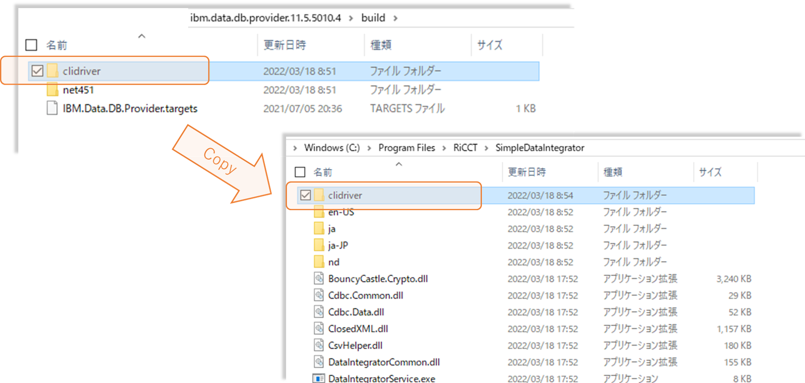

SDI Installation Guide
SDI Installation
Step1: Download SDI
Simple Data Integrator 1.1.2203.1
Extraction password:
WelcomeToSdi
Step2: Interactively install SimpleDataIntegratorSetup.msi
Run SimpleDataIntegratorSetup.msi.
Follow the instructions on the screen to complete the installation.
Step3: Install SimpleDataIntegratorWorker service
Open the Command Prompt with Administrative Privileges. Execute the following command.
sc create "SimpleDataIntegratorWorker" binPath="C:\Program Files\RiCCT\SimpleDataIntegrator\DataIntegratorService.exe" DisplayName="SimpleDataIntegratorWorker" start=delayed-auto
If you are using DB2, please follow the steps below to set up.
About DB2 library installation
The following work is required only when using DB2, If you do not use DB2, you do not need to work in Step 4.
Step4: DB2 library installation
Step4-1 : Download and unzip the DB2 library
Download and unzip ibm.data.db.provider.11.5.5010.4.nupkg from the URL below.
https://www.nuget.org/packages/IBM.Data.DB.Provider/11.5.5010.4
About decompressing ibm.data.db.provider.11.5.5010.4.nupkg
Method 1：Rename the ibm.data.db.provider.11.5.5010.4.nupkg file name to ibm.data.db.provider.11.5.5010.4.zip and then unzip it.
Method 2：Decompress using a third party decompression software. (Example: 7-Zip)
Step4-2 : Copy the required library to the SDI installed folder
Copy the clidriver folder under the unzipped build folder and all the files in it to the SDI installation folder.

SDI default installation folder：C:\Program Files\RiCCT\SimpleDataIntegrator
Step4-3 : Add Path
Open the Command Prompt with Administrative Privileges.
Execute the following command.
setx /M path "%path%;C:\Program Files\RiCCT\SimpleDataIntegrator\clidriver\bin"